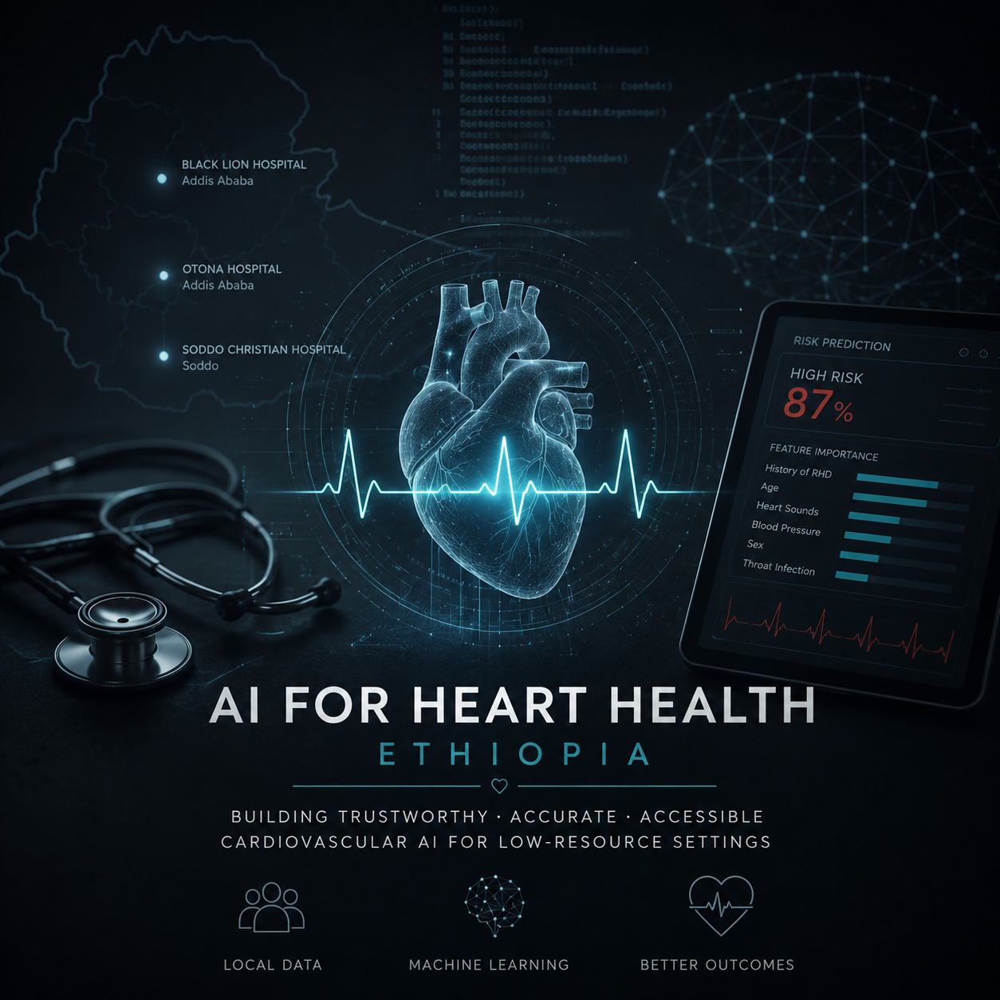
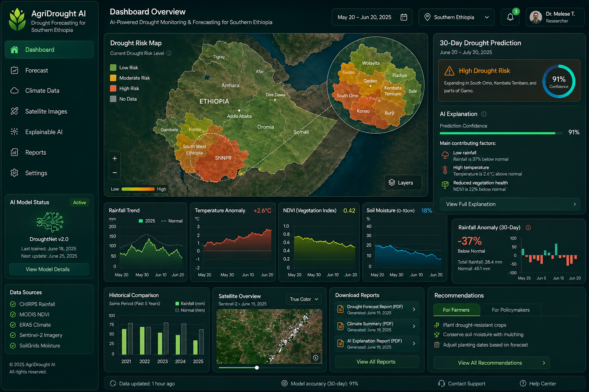
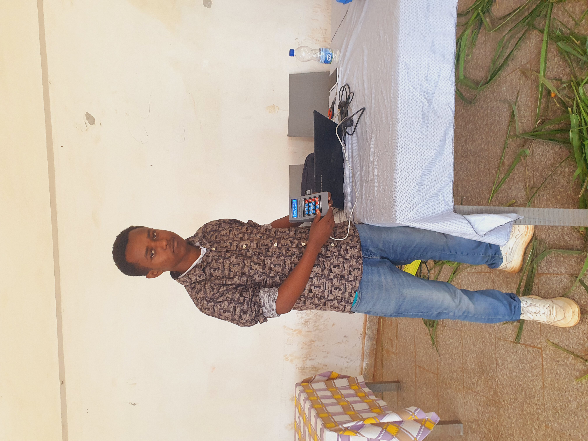
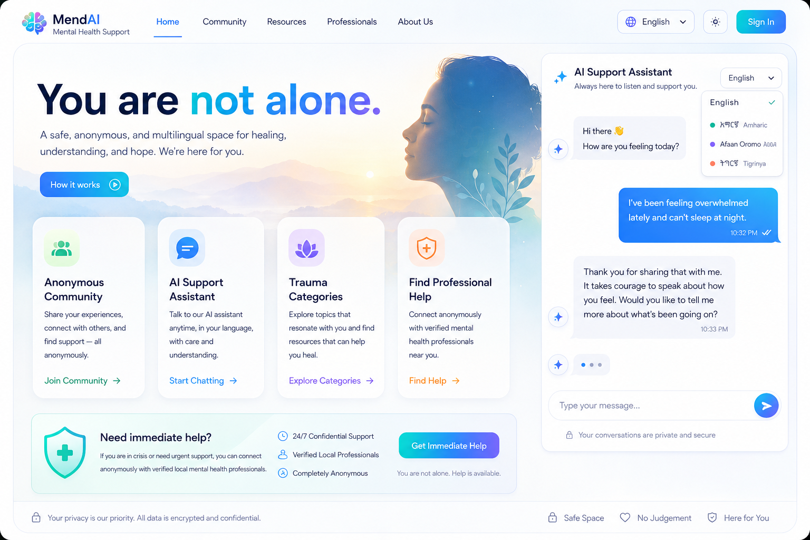
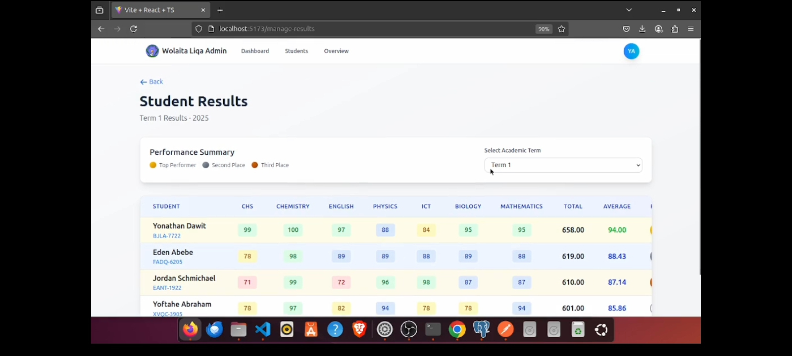
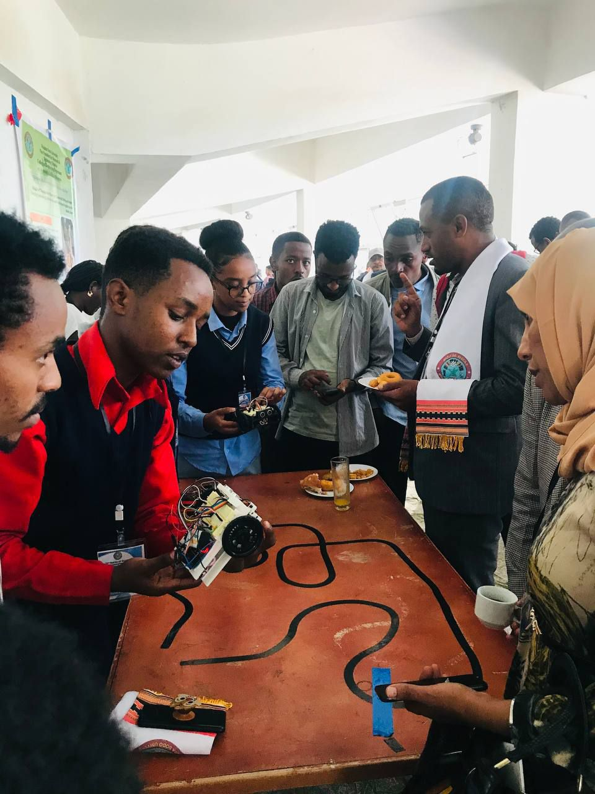
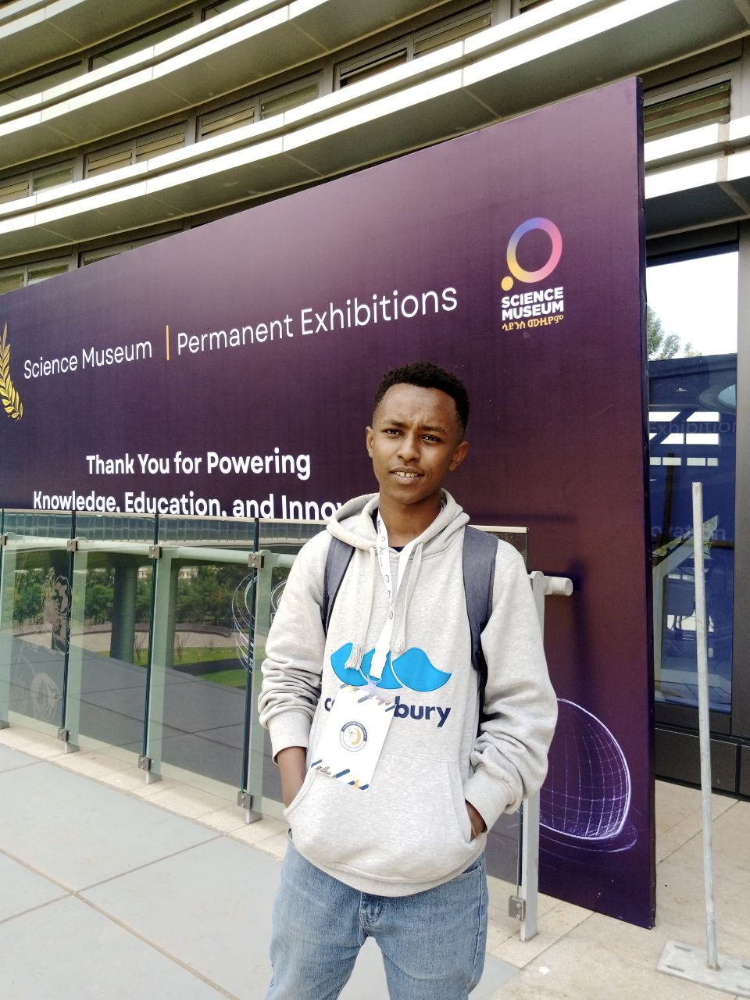
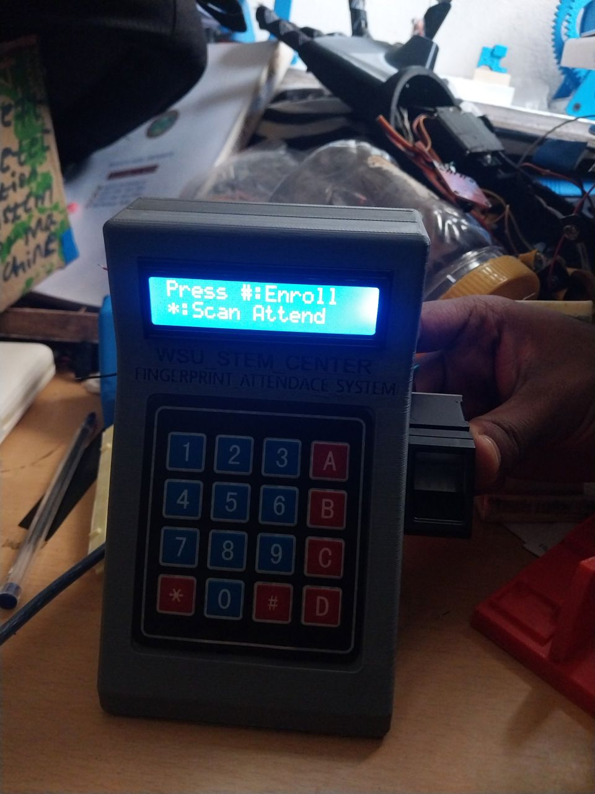
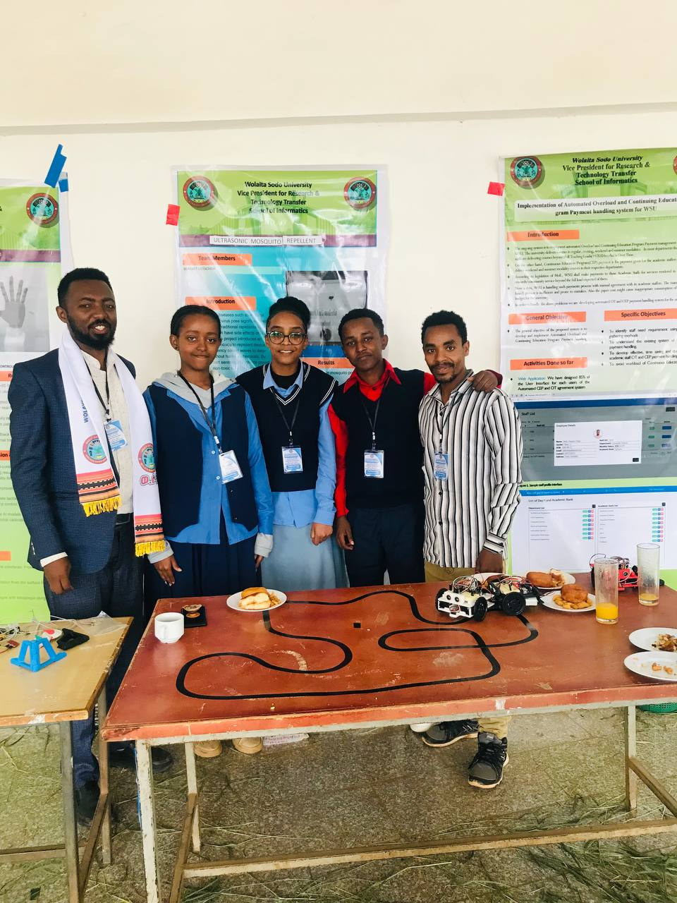
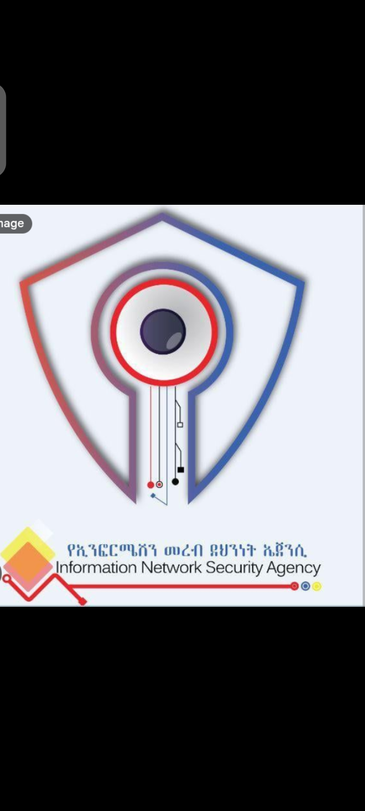

Building technology from curiosity, purpose, and responsibility
I am Dagim Tilahun Kassa, an aspiring computer scientist from Ethiopia with a deep interest in artificial intelligence, healthcare, and engineering solutions for communities where technology can create meaningful change.
Growing up in Ethiopia, I witnessed how limitations in healthcare resources can affect people's lives. These experiences shaped my belief that technology should move beyond innovation for its own sake and focus on solving problems that matter. This belief has guided my journey toward exploring how artificial intelligence can support healthcare systems through reliable, accessible, and human-centered solutions.
My journey into computer science began with curiosity: understanding how software works, how machines learn, and how technology can be built to address real challenges. Through independent learning, research experiences, and collaboration with institutions including the Ethiopian Artificial Intelligence Institute, Wolaita Sodo University Technology Campus, and healthcare professionals, I have developed projects in machine learning, predictive modeling, and AI applications.
My Journey
Scroll horizontally to explore history
Projects & Research
A collection of my research and engineering projects aimed at solving real-world problems.

AI for Cardiovascular Disease Prediction in Low-Resource Healthcare
Investigating model generalizability, dataset bias, and Explainable AI (XAI) for cardiovascular screening in primary healthcare facilities across Ethiopia.

Explainable AI Platform for Agricultural Drought Forecasting
Combining machine learning and Earth observation data to construct an interactive early drought forecasting network in Southern Ethiopia.

Embedded Hardware Prototypes
Practical microcontroller assemblies including a fingerprint system used at Wolaita Sodo University, a water filter analyzer, and automated schedule triggers.

Multilingual AI Platform for Accessible Mental Health Support
An anonymous, culturally aware multilingual platform exploring AI-driven supportive conversations for underserved communities.

Integrated School Management & Information System
A multi-portal educational architecture automating administrative registries, tuition evaluation pipelines, and academic report workflows.
Project & Exhibition Gallery
Snapshots from artificial intelligence exhibitions, hardware prototyping, and institutional collaborations.

Hardware & Track Prototyping

Science & Technology Museum Exhibition

Biometric Attendance System Integration

Project Presentation & Team Showcase
Associated Institutions & Programs

Leadership & Impact
Building communities, mentoring students, and representing STEM initiatives at regional and national levels.
Leadership is not about a title, it's about creating opportunities for others to grow.
Founder & President
Technology and Innovation Club | Liqa Boarding School
Founded the school's first Technology and Innovation Club to promote hands-on learning in programming, electronics, and engineering. Developed training activities that certified 47 students and supported more than 20 student-led technology projects, creating a lasting culture of innovation within the school.
STEM Representative
Liqa Boarding School
Represented the school's STEM Center by coordinating innovation activities, encouraging student participation in research, and supporting science and engineering programs.
STEM Representative
Wolaita Sodo University Technology Campus
Represented the university's STEM Center and participated in technology outreach, engineering activities, and collaborative innovation programs connecting secondary school students with university researchers.
National Research & Innovation Conferences
Representing Liqa Boarding School and Wolaita Sodo University STEM Centers
Represented both Liqa Boarding School and Wolaita Sodo University STEM Centers at two national research and innovation conferences, presenting projects, exchanging ideas with researchers, and engaging with Ethiopia's growing innovation community.
National Mathematics Olympiad
Earned national recognition as a Mathematics Olympiad medalist, strengthening my analytical thinking and mathematical problem-solving foundation.
Experience
Exploring artificial intelligence, research, and engineering through collaboration with leading institutions and experts.
Collaborated
Worked On
& Trained
Collaboration
Ethiopian Artificial Intelligence Institute (EAII)
AI Project Trainee
Worked on artificial intelligence projects under the guidance of researchers and mentors, gaining experience in machine learning, software development, and applying AI to real-world challenges.
Information Network Security Administration (INSA)
Cyber Talent Program - Emerging Technology (AI)
Selected for Ethiopia's national Cyber Talent Program in the Emerging Technology track, specializing in artificial intelligence and advanced computing while strengthening technical and advanced computing skills.
Wolaita Sodo University Technology Campus
Collaborated with STEM initiatives, engineering programs, and innovation activities while working alongside university faculty and students on technology-focused projects.
Independent AI Research
Ongoing
Conducting independent research on trustworthy artificial intelligence for healthcare, with a focus on developing reliable AI systems for resource-limited settings.
Collaborating with physicians and healthcare professionals from Black Lion (Tukur Anbessa) Specialized Hospital, Sodo Christian Hospital, and Otona Hospital to better understand real clinical challenges and explore AI approaches that can support medical decision-making responsibly.
Technical Toolkit
The technologies, programming languages, and tools I use to build, explore, and innovate.
Programming Languages
- Python
- C++
- Arduino (Embedded C/C++)
- JavaScript
- React.js
- HTML5
- CSS3
Artificial Intelligence
- Machine Learning
- Deep Learning
- Artificial Neural Networks (ANN)
- Computer Vision
Embedded Systems
- Arduino Programming
- Microcontroller Programming
- Sensor Integration
- Hardware Prototyping
Web Development
- Responsive Front-end Development
- React.js
- Modern UI/UX Implementation
Tools & Platforms
- Visual Studio Code
- TensorFlow
- Google Colab
- PyTorch
- Jupyter Notebook
- Scikit-learn
- Git & GitHub
Selected Certifications & Honors
Continuous learning, academic honors, and foundational milestones. Click any card to inspect the document.
AI Fundamentals
Foundations of artificial intelligence, machine learning concepts, and intelligent systems.
Programming Fundamentals
Core programming concepts, algorithms, and software development principles.
Data Analysis
Data preprocessing, analysis, visualization, and practical data-driven decision making.
Android Developer Fundamentals
Android application development using modern mobile development practices.
JavaScript Algorithms & Data Structures
Algorithms, data structures, and JavaScript programming for web applications.
Ethiopian Artificial Intelligence Institute
Completed intensive summer camp track specializing in emerging technology and intelligence frameworks.
President and Founder
Spearheaded founding operations, club curriculum development, and student mentorship for the School Tech Club.
WSU STEM Center Trainee
Conducted hands-on training tracks in advanced computing, structural logic development, and engineering principles.
National Mathematics Olympiad Medalist
Awarded distinguished placement standing in high-stakes regional and national analytical testing rounds.